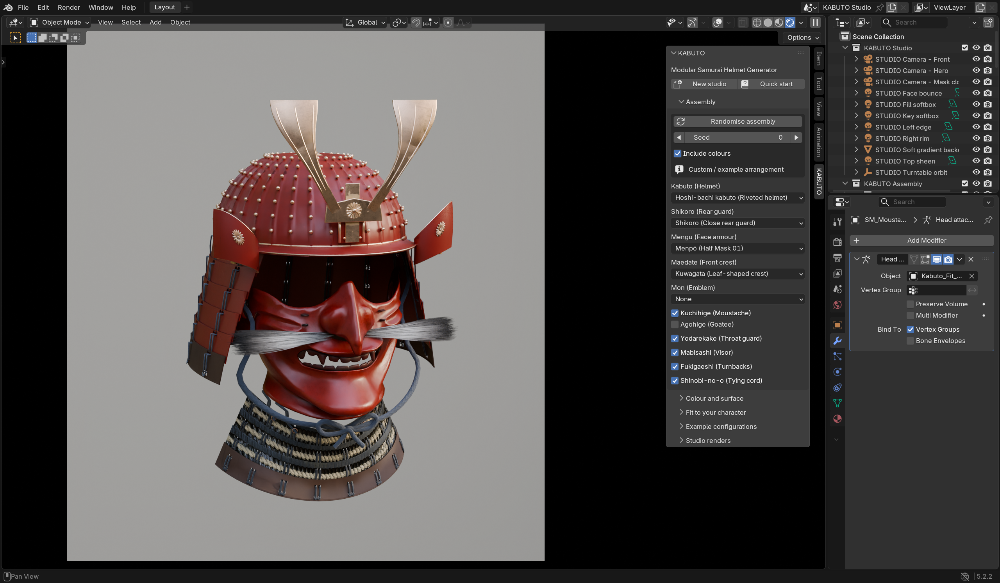

Choose a panel, then click a numbered control to see what it does.

Actual add-on screenshot.Open full Blender view ↗
INSIDE THE ADD-ON
Interactive guide to real controls. Changes to your model are made in Blender.